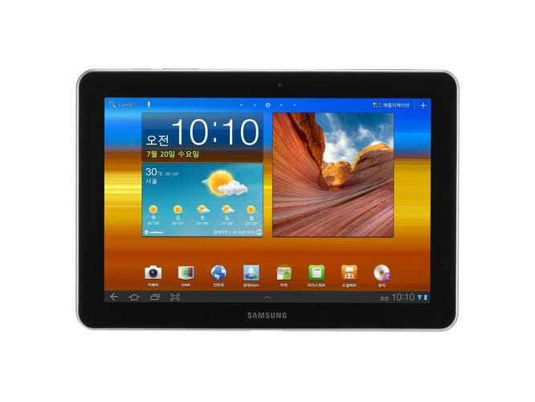

三星 Galaxy Tab 10.1

8.6 毫米轻薄机身开启三星平板王朝，安卓阵营的初代标杆。
客观评测
Galaxy Tab 10.1 以约 8.6 毫米厚度、565 克重量改写了安卓平板笨重的印象，10.1 英寸 PLS 屏分辨率 1280×800，色彩表现不错。Tegra 2 双核 1GHz 处理器配 1GB 内存，后置 300 万、前置 200 万像素摄像头，电池约 7000mAh。TouchWiz 在原生 Honeycomb 基础上加入多任务小组件，实测滑动流畅度属当时安卓阵营第一梯队。
主观点评
它与初代 iPad 2 正面交锋，靠极致轻薄与塑料机身的柔韧手感赢得不少好感。作为三星平板王朝的真正起点，Galaxy Tab 系列此后一路延伸到 S8 Ultra 的 14.6 英寸巨屏，轻薄这条基因在这台 2011 年的机器上已经写好。
优点与不足
- 当时同尺寸中最轻薄的机身
- PLS 屏幕色彩与可视角度出色
- 三星完善的全球售后与配件生态
- 塑料机身质感一般
- TouchWiz 定制软件占用资源
- Honeycomb 应用生态尚不成熟
参数规格
| 屏幕 | 10.1 英寸 PLS 触摸屏 |
|---|---|
| 分辨率 | 1280×800 |
| 处理器 | NVIDIA Tegra 2 双核 1GHz |
| 内存 | 1GB |
| 存储 | 16GB / 32GB，支持 microSD |
| 系统 | Android 3.0 Honeycomb，TouchWiz 定制 |
| 摄像头 | 后置 300 万、前置 200 万像素 |
| 重量 | 约 565 克 |
| 厚度 | 约 8.6 毫米 |
| 电池 | 约 7000mAh |